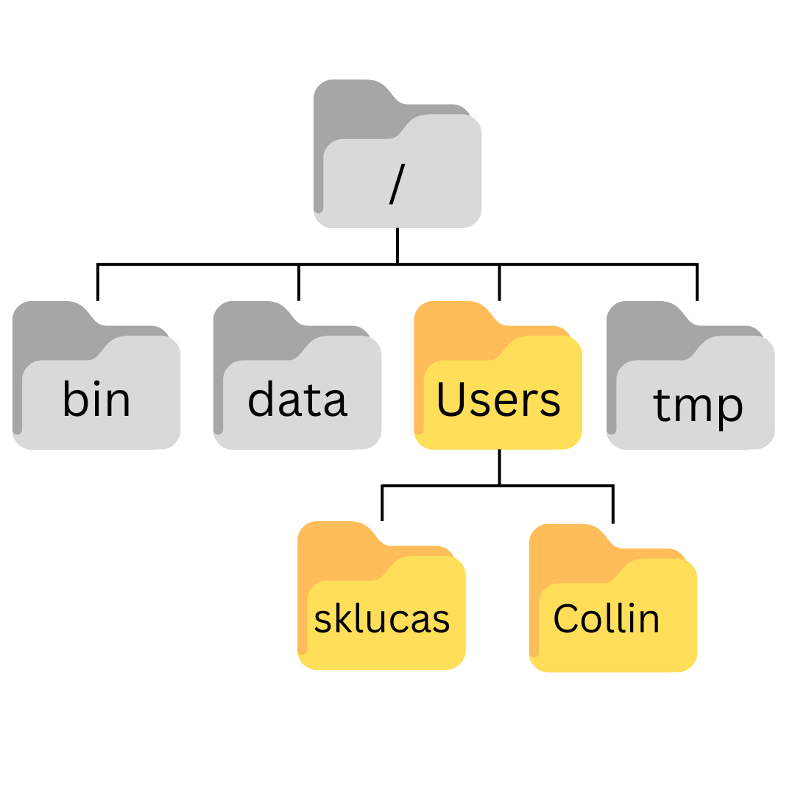

Working in the Unix Shell
Questions |
Objectives |
|---|---|
|
|
Background
We interact with computers in many different ways, such as through a keyboard and mouse, and touch screen interfaces. The most widely used way to interact with personal computers is called a graphical user interface (GUI). With a GUI, we give instructions by clicking a mouse and using menu-driven interactions.
While the visual aid of a GUI makes it intuitive to use, this way of delivering instructions to a computer scales very poorly. Imagine the following task: you have to copy the third line of one thousand text files in one thousand different directories and paste it into a single file. Using a GUI, you would not only be clicking at your desk for several hours, but you could potentially also commit an error in the process of completing this repetitive task. This is where we take advantage of the Unix shell. The Unix shell is both a command-line interface (CLI) and a scripting language, allowing such repetitive tasks to be done automatically and fast. With the proper commands, the shell can repeat tasks with or without some modification as many times as we want. Using the shell, the task in the literature example can be accomplished in seconds.
The Shell
The shell is a program where users can type commands. With the shell, it’s possible to invoke complicated programs or simple commands with only one line of code. The most popular Unix shell is Bash (the Bourne Again SHell — so-called because it’s derived from a shell written by Stephen Bourne). Bash is the default shell on most implementations of Unix (Mac computers running macOS Catalina or later releases, the default Unix Shell is “Zsh”) and in most packages that provide Unix-like tools for Windows. Note that ‘Git Bash’ is a piece of software that enables Windows users to use a Bash-like interface when interacting with Git.
Using the shell will take some effort and some time to learn. While a GUI presents you with choices to select, CLI choices are not automatically presented to you, so you must learn a few commands like new vocabulary in a language you’re studying. Luckily, a small number of “words” (i.e. commands) gets you a long way, and we’ll cover those essential few today.
The grammar of a shell allows you to combine existing tools into powerful pipelines and handle large volumes of data automatically. Sequences of commands can be written into a script, improving the reproducibility of workflows.
In addition, the command line is often the easiest way to interact with remote machines and supercomputers. Familiarity with the shell is near essential to run a variety of specialized tools and resources including high-performance computing systems. As clusters and cloud computing systems become more popular for scientific data crunching, being able to interact with the shell is becoming a necessary skill. We can build on the command-line skills covered here to tackle a wide range of scientific questions and computational challenges.
Let’s get started.
The prompt
When the shell is first opened, you are presented with a prompt, indicating that the shell is waiting for input.
$The shell typically uses $ as the prompt, but may use a different symbol. In the examples for this lesson, we’ll show the prompt as $. Most importantly, do not type the prompt when typing commands. Only type the command that follows the prompt. This rule applies both in these lessons and in lessons from other sources. Also note that after you type a command, you have to press the Enter key to execute it.
The prompt is followed by a text cursor, a character that indicates the position where your typing will appear. The cursor is usually a flashing or solid block, but it can also be an underscore or a pipe. You may have seen it in a text editor program, for example.
Note that your prompt might look a little different. In particular, most popular shell environments by default put your user name and the host name before the $. Such a prompt might look like, e.g.:
sklucas@localhost $The prompt might even include more than this. Do not worry if your prompt is not just a short $. This lesson does not depend on this additional information and it should also not get in your way. The only important item to focus on is the $ character itself and we will see later why.
So let’s try our first command, ls, which is short for listing. This command will list the contents of the current directory:
$ lsDesktop Downloads Movies Pictures
Documents Library Music PublicA Typical Problem
You are a marine biologist who has just returned from a six-month survey of the North Pacific Gyre, where you have sampled gelatinous marine life in the Great Pacific Garbage Patch. You have 1520 samples that you’ve run through an assay machine to measure the relative abundance of 300 proteins. You need to run these 1520 files through an imaginary program called
goostats.sh. In addition to this huge task, you have to write up results by the end of the month, so your paper can appear in a special issue of Aquatic Goo Letters.If you choose to run
goostats.shby hand using a GUI, you’ll have to select and open a file 1520 times. Ifgoostats.shtakes 30 seconds to run each file, the whole process will take more than 12 hours. With the shell, you can instead assign your computer this mundane task while you focuses her attention on writing your paper.The next few lessons will explore the ways you can achieve this. More specifically, the lessons explain how you can use a command shell to run the
goostats.shprogram, using loops to automate the repetitive steps of entering file names, so that your computer can work while you write your paper.As a bonus, once you have put a processing pipeline together, you will be able to use it again whenever you collect more data.
In order to achieve her task, you need to know how to:
- navigate to a file/directory
- create a file/directory
- check the length of a file
- chain commands together
- retrieve a set of files
- iterate over files
- run a shell script containing her pipeline
- A shell is a program whose primary purpose is to read commands and run other programs.
- This lesson uses Bash, the default shell in many implementations of Unix.
- Programs can be run in Bash by entering commands at the command-line prompt.
- The shell’s main advantages are its high action-to-keystroke ratio, its support for automating repetitive tasks, and its capacity to access networked machines.
- A significant challenge when using the shell can be knowing what commands need to be run and how to run them.
Navigating files and directories
| Questions | Objectives |
|---|---|
|
|
The part of the operating system responsible for managing files and directories is called the file system. It organizes our data into files, which hold information, and directories (also called ‘folders’), which hold files or other directories.
Several commands are frequently used to create, inspect, rename, and delete files and directories. To start exploring them, we’ll go to our open shell window.
Where am I?
First, let’s find out where we are by running a command called pwd (which stands for ‘print working directory’). Directories are like places — at any time while we are using the shell, we are in exactly one place called our current working directory. Commands mostly read and write files in the current working directory, i.e. ‘here’, so knowing where you are before running a command is important. pwd shows you where you are:
$ pwd/Users/sklucasThe computer’s response is /Users/sklucas, which is my home directory.
The home directory
The home directory will look different on different operating systems.
- Linux:
/home/sklucas - Windows:
C:\Users\sklucas(This may differ based on Windows versions)
If pwd returns something else, you may need to navigate to your home directory using the command cd.
Let’s look at how a filesystem is organized:

The filesystem looks like an upside-down tree. We refer to the topmost directory as the “root directory”. It contains everything else. It is referred to with the / symbol.
In this illustration, we have several other directories stemming off of the root. The bin directory often refers to a location where programs are stored. tmp is a common directory on filesystems as a place to hold files that don’t need to be kept long-term. You may recognize the Users directory from the output we had above when typing pwd. We know the path of our home directory, where we currently are, is /Users/sklucas.

The Users folder may have more than one directory in it. For example, the image below depicts two users, sklucas and Collin. The home directory just as the home directory for sklucas is /Users/sklucas, the home directory for Collin would be /Users/Collin. Typically, when you open a new command prompt, you will start in your home directory by default
Listing directory contents
We often want to know what a directory contains. To do this, we use the “listing” command ls:
$ lswhich might return something that looks like this (results will vary):
Applications Documents Library Music Public
Desktop Downloads Movies Pictures ls prints the names of the files and directories in your current location. Typing ls -F will give specific notation below based on the
A trailing
/indicates that this is a directory@indicates a link*indicates an executable
Depending on your shell’s default settings, the shell might also use colors to indicate whether each entry is a file or directory.
Getting help
Most bash commands have help menus that tell the user about how the command is used and what options are available for tailoring the function. There are two common ways to get help with commands, which can differ based on the source of the command (built-in or externally installed), and the operating system.
We can pass a
--helpoption to any command (on linux and Git Bash).$ ls --helpWe can read the manual on a function using the
mancommand (linux and OSX)$ man lsTo navigate through the
manpages, you may use ↑↑ and ↓↓ to move line-by-line, or try bb and SpacebarSpacebar to skip up and down by a full page. To search for a character or word in themanpages, use // followed by the character or word you are searching for. Sometimes a search will result in multiple hits. If so, you can move between hits using NN (for moving forward) and Shift+NShift+N (for moving backward). To **quit** themanpages, press qq.
Command options
We’ve seen that commands can have many options associated with them, which can control how the command functions. These are often notated by short and long forms that are typically equal in their meaning, but have conventional use in different scenarios.
When options exist as both short and long options:
Use the short option when typing commands directly into the shell to minimize keystrokes and get your task done faster.
Use the long option in scripts to provide clarity. It will be read many times and typed once.
Challenge Questions
Explore the ls command options to answer the following questions:
Exploring other directories
Not only can we use ls on the current working directory, but we can use it to list the contents of a different directory. Let’s take a look at our Desktop directory by running ls -F Desktop, i.e., the command ls with the -F option and the argument Desktop. The argument Desktop tells ls that we want a listing of something other than our current working directory:
$ ls -F DesktopYou should see your newly created directory “workshop”
shell-lesson-data/Note that if a directory named Desktop does not exist in your current working directory, this command will return an error. Typically, a Desktop directory exists in your home directory, which we assume is the current working directory of your bash shell.
Your output should be a list of all the files and sub-directories in your Desktop directory, including the shell-lesson-data directory you downloaded at the setup for this lesson. (On most systems, the contents of the Desktop directory in the shell will show up as icons in a graphical user interface behind all the open windows. See if this is the case for you.)
Organizing things hierarchically helps us keep track of our work. While it’s possible to put hundreds of files in our home directory just as it’s possible to pile hundreds of printed papers on our desk, it’s much easier to find things when they’ve been organized into sensibly-named subdirectories.
Now that we know the shell-lesson-data directory is located in our Desktop directory, we can do two things.
First, using the same strategy as before, we can look at its contents by passing a directory name to ls:
$ ls -F Desktop/shell-lesson-dataexercise-data/ north-pacific-gyre/Second, we can actually change our location to a different directory, so we are no longer located in our home directory.
The command to change locations is cd followed by a directory name to change our working directory. cd stands for ‘change directory’, which is a bit misleading. The command doesn’t change the directory; it changes the shell’s current working directory. In other words it changes the shell’s settings for what directory we are in. The cd command is akin to double-clicking a folder in a graphical interface to get into that folder.
Let’s say we want to move into the exercise-data directory we saw above. We can use the following series of commands to get there:
$ cd Desktop
$ cd shell-lesson-data
$ cd exercise-dataThese commands will move us from our home directory into our Desktop directory, then into the shell-lesson-data directory, then into the exercise-data directory. You will notice that cd doesn’t print anything. This is normal. Many shell commands will not output anything to the screen when successfully executed. But if we run pwd after it, we can see that we are now in /Users/sklucas/Desktop/shell-lesson-data/exercise-data.
If we run ls -F without arguments now, it lists the contents of /Users/sklucas/Desktop/shell-lesson-data/exercise-data, because that’s where we now are:
$ pwd/Users/sklucas/Desktop/shell-lesson-data/exercise-data$ ls -Falkanes/ animal-counts/ creatures/ numbers.txt writing/We now know how to go down the directory tree (i.e. how to go into a subdirectory), but how do we go up (i.e. how do we leave a directory and go into its parent directory)? We might try the following:
$ cd shell-lesson-data-bash: cd: shell-lesson-data: No such file or directoryBut we get an error! Why is this?
With our methods so far, cd can only see sub-directories inside your current directory. There are different ways to see directories above your current location; we’ll start with the simplest.
There is a shortcut in the shell to move up one directory level. It works as follows:
$ cd .... is a special directory name meaning “the directory containing this one”, or more succinctly, the parent of the current directory. Sure enough, if we run pwd after running cd .., we’re back in /Users/sklucas/Desktop/shell-lesson-data:
$ pwd/Users/sklucas/Desktop/shell-lesson-dataThe special directory .. doesn’t usually show up when we run ls. If we want to display it, we can add the -a option to ls -F:
$ ls -F -a./ ../ exercise-data/ north-pacific-gyre/-a stands for ‘show all’ (including hidden files); it forces ls to show us file and directory names that begin with ., such as .. (which, if we’re in /Users/sklucas, refers to the /Users directory). As you can see, it also displays another special directory that’s just called ., which means ‘the current working directory’. It may seem redundant to have a name for it, but we’ll see some uses for it soon.
Note that in most command line tools, multiple options can be combined with a single - and no spaces between the options; ls -F -a is equivalent to ls -Fa.
These three commands are the basic commands for navigating the filesystem on your computer: pwd, ls, and cd. Let’s explore some variations on those commands. What happens if you type cd on its own, without giving a directory?
$ cdHow can you check what happened? pwd gives us the answer!
$ pwd/Users/sklucasIt turns out that cd without an argument will return you to your home directory, which is great if you’ve got lost in your own filesystem.
Let’s try returning to the exercise-data directory from before. Last time, we used three commands, but we can actually string together the list of directories to move to exercise-data in one step:
$ cd Desktop/shell-lesson-data/exercise-dataCheck that we’ve moved to the right place by running pwd and ls -F.
If we want to move up one level from the data directory, we could use cd ... But there is another way to move to any directory, regardless of your current location.
So far, when specifying directory names, or even a directory path (as above), we have been using relative paths. When you use a relative path with a command like ls or cd, it tries to find that location from where we are, rather than from the root of the file system.
However, it is possible to specify the absolute path to a directory by including its entire path from the root directory, which is indicated by a leading slash. The leading / tells the computer to follow the path from the root of the file system, so it always refers to exactly one directory, no matter where we are when we run the command.
This allows us to move to our shell-lesson-data directory from anywhere on the filesystem (including from inside exercise-data). To find the absolute path we’re looking for, we can use pwd and then extract the piece we need to move to shell-lesson-data.
$ pwd/Users/sklucas/Desktop/shell-lesson-data/exercise-data$ cd /Users/sklucas/Desktop/shell-lesson-dataRun pwd and ls -F to ensure that we’re in the directory we expect.
Challenge Questions
Using the filesystem diagram below, if pwd displays /Users/thing, what will ls -F ../backup display?

../backup: No such file or directory2012-12-01 2013-01-08 2013-01-272012-12-01/ 2013-01-08/ 2013-01-27/original/ pnas_final/ pnas_sub/
ls reading comprehension
Using the filesystem diagram below, if pwd displays /Users/backup, and -r tells ls to display things in reverse order, what command(s) will result in the following output:
pnas_sub/ pnas_final/ original/
ls pwdls -r -Fls -r -F /Users/backup
General Syntax of a Shell Command
We have now encountered commands, options, and arguments, but it is perhaps useful to formalise some terminology.
Consider the command below as a general example of a command, which we will dissect into its component parts:
$ ls -F /
ls is the command, with an option -F and an argument /. We’ve already encountered options which either start with a single dash (-), known as short options, or two dashes (--), known as long options. Options change the behavior of a command and arguments tell the command what to operate on (e.g. files and directories). Sometimes options and arguments are referred to as parameters. A command can be called with more than one option and more than one argument, but a command doesn’t always require an argument or an option.
You might sometimes see options being referred to as switches or flags, especially for options that take no argument. In this lesson we will stick with using the term option.
Each part is separated by spaces. If you omit the space between ls and -F the shell will look for a command called ls-F, which doesn’t exist. Also, capitalization can be important. For example, ls -s will display the size of files and directories alongside the names, while ls -S will sort the files and directories by size, as shown below:
$ cd ~/Desktop/shell-lesson-data
$ ls -s exercise-datatotal 28
4 animal-counts 4 creatures 12 numbers.txt 4 alkanes 4 writingNote that the sizes returned by ls -s are in blocks. As these are defined differently for different operating systems, you may not obtain the same figures as in the example.
$ ls -S exercise-dataanimal-counts creatures alkanes writing numbers.txtPutting all that together, our command ls -F / above gives us a listing of files and directories in the root directory /. An example of the output you might get from the above command is given below:
$ ls -F /Applications/ System/
Library/ Users/
Network/ Volumes/Your Task: Organizing Files
Knowing this much about files and directories, You are ready to organize the files that the protein assay machine will create.
You create a directory called
north-pacific-gyre(to remind yourself where the data came from), which will contain the data files from the assay machine and your data processing scripts.Each of your physical samples is labelled according to your lab’s convention with a unique ten-character ID, such as ‘NENE01729A’. This ID is what you used in your collection log to record the location, time, depth, and other characteristics of the sample, so you decide to use it within the filename of each data file. Since the output of the assay machine is plain text, you will call your files
NENE01729A.txt,NENE01812A.txt, and so on. All 1520 files will go into the same directory.Now in your current directory
shell-lesson-data, you can see what files you have using the command:$ ls north-pacific-gyre/This command is a lot to type, but you can let the shell do most of the work through what is called tab completion. If you types:
$ ls norand then presses Tab (the tab key on her keyboard), the shell automatically completes the directory name for you:
$ ls north-pacific-gyre/Pressing Tab again does nothing, since there are multiple possibilities; pressing Tab twice brings up a list of all the files.
If you then presses G and then presses Tab again, the shell will append ‘goo’ since all files that start with ‘g’ share the first three characters ‘goo’.
$ ls north-pacific-gyre/gooTo see all of those files, you can press Tab twice more.
ls north-pacific-gyre/goo goodiff.sh goostats.shThis is called tab completion, and we will see it in many other tools as we go on.
Creating, moving, removing
| Questions | Objectives |
|---|---|
|
|